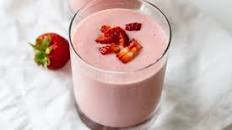

Strawberry Banana Smoothie

A refreshing summer treat
One of the best ways to enjoy summer is drinking a cold and refreshing smoothie made from fresh ingredients.
Ingredients
- Fresh strawberries
- Banana
- Greek yogurt
- Milk or Orange juice
Steps
- Add all ingredients to a high powered blender and blend until smooth